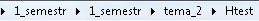

Основы защиты информации
Цели
- Рассмотреть основные угрозы безопасности данных.
- Выявить способы, средства и механизмы защиты данных от несанкционированного доступа.
- Рассмотреть способы профилактики компьютерных вирусов и борьбы с ними.
Инструменты:
- ОС Windows
- Браузер
- Программа Проводник
- Текстовый редактор Блокнот
- Htest
Задание. Изучите тему. В конце темы указано как и где составить тест.
Основы защиты информации
В связи с все возрастающей ролью информации в жизни общества вопросы информационной безопасности занимают особое место и требуют к себе все большего внимания. Первичным является понятие информационной безопасности - это защищенность информации и поддерживающей инфраструктуры от случайных или преднамеренных воздействий естественного или искусственного характера, чреватых нанесением ущерба владельцам или пользователям информации.
Безопасность данных - такое состояние хранимых, обрабатываемых и принимаемых данных, при которых невозможно их случайное или преднамеренное получение, изменение или уничтожение.
Защита данных - совокупность целенаправленных действий и мероприятий по обеспечению безопасности данных. Таким образом, защита данных есть процесс обеспечения безопасности данных, а безопасность - состояние данных, конечный результат процесса защиты. Защита данных осуществляется с использованием методов (способов) защиты.
Метод (способ) защиты данных - совокупность приемов и операций, реализующих функции защиты данных. Примерами их могут служить, например, методы шифрования и паролирования.
На основе методов защиты создаются средства защиты(например, устройства шифрации/дешифрации, программы анализа пароля, датчики охранной сигнализации и т.д.).
Механизм защиты - совокупность средств защиты, функционирующих совместно для выполнения определенной задачи по защите данных (криптографические протоколы, механизмы защиты операционных систем и т.д.). Система обеспечения безопасности данных (СОБД) - совокупность средств и механизмов защиты данных.
Концептуальная модель безопасности информации представлена на рис. 1.
Рис. 1. Концептуальная модель безопасности информации
Информационная безопасность и её составляющие
Гарантами национальной безопасности РФ являются: Президент РФ, а также законодательные и иные правовые акты РФ, регулирующие правовые отношения в сфере информационной безопасности (ИБ) и защиты государственной тайны.
Угрозами информационной войны для РФ являются: значительная протяженность территории и открытость границ.
Концепция системы защиты от информационного оружия должна включать в себя:
· механизмы защиты пользователей от различных типов и уровней угроз для национальной информационной инфраструктуры;
· процедуры оценки уровня и особенностей атаки против национальной инфраструктуры в целом и отдельных пользователей;
· признаки, сигнализирующие о возможном нападении.
Основные угрозы безопасности данных
Для того чтобы сформулировать главную цель защиты данных, необходимо определить потенциально существующие возможности нарушения безопасности хранимых, обрабатываемых и передаваемых данных. Знание возможных угроз, а также уязвимых мест защиты, которые эти угрозы обычно используют, необходимо для того, чтобы выбирать наиболее экономичные средства обеспечения информационной безопасности.
Под угрозой безопасности данных будем понимать потенциально существующую возможность случайного или преднамеренного действия или бездействия, в результате которого может быть нарушена безопасность данных. Несанкционированный доступ к данным (НСД) - злоумышленное или случайное действие, нарушающее технологическую схему обработки данных и ведущее к получению, модификации или уничтожению данных. НСД может быть пассивным (чтение, копирование) и активным (модификация, уничтожение).
Классификация угроз безопасности данных приведена на рис. 2.
Рис. 2. Классификация угроз безопасности данных
Воздействия, в результате которых может быть нарушена безопасность данных, включают в себя:
- случайные воздействия природной среды (ураган, пожар и т.п.);
-
целенаправленные воздействия
нарушителя (шпионаж, разрушение компонентов ин
формационной системы, использование
прямых каналов утечки данных);
-
внутренние возмущающие факторы
(отказы аппаратуры, ошибки в математическом и
программном обеспечении, недостаточная подготовка персонала и т.д.).
Под каналом утечки данных будем понимать потенциальную возможность нарушителю получить доступ к НСД, которая обусловлена архитектурой, технологической схемой функционирования информационной системы, а также существующей организацией работы с данными. Все каналы утечки данных можно разделить на косвенные и прямые.
Косвенными называются такие каналы утечки, использование которых для НСД не требует непосредственного доступа к техническим устройствам информационной системы. Они возникают, например, вследствие недостаточной изоляции помещений, просчетов в организации работы с данными и предоставляют нарушителю возможность применения подслушивающих устройств, дистанционного фотографирования, перехвата электромагнитных излучений, хищения носителей данных и отходов и т.п.).
Прямые каналы утечкиданных требуют непосредственного доступа к техническим средствам информационной системы и данным. Наличие прямых каналов утечки обусловлено недостатками технических и программных средств защиты, ОС, СУБД, математического и программного обеспечения. Прямые каналы утечки данных позволяют нарушителю подключиться к аппаратуре информационной системы, получить доступ к данным и выполнить действия по анализу, модификации и уничтожению данных.
Технические каналы утечки информации классифицируются по физической природе носителя. С учетом физической природы путей переноса информации каналы утечки данных можно классифицировать на следующие группы:
- визуально-оптические - источником информации здесь служит, как правило, непосредственное или удаленное наблюдение (в том числе и телевизионное);
- акустические - источником информации здесь служат речь и шумы, средой распространения звука являются воздух, земля, вода, строительные конструкции (кирпич, железобетон, металлическая арматура и др.);
- электромагнитные (включая магнитные и электрические) - источником информацииздесь служат различные провода и кабели связи, создающие вокруг себя магнитное иэлектрическое поле, информацию с которых можно перехватить путем наводок надругие провода и элементы аппаратуры в ближней зоне их расположения;
- материально-вещественные (бумага, фото, магнитные носители и т.д.).
Основные методы и средства защиты данных
На первом этапе развития концепций обеспечения безопасности данных преимущество отдавалось программным средствам защиты. Когда практика показала, что для обеспечения безопасности данных этого недостаточно, интенсивное развитие получили всевозможные устройства и системы. Постепенно, по мере формирования системного подхода к проблеме обеспечения безопасности данных, возникла необходимость комплексного применения методов защиты и созданных на их основе средств и механизмов защиты. Обычно на предприятиях в зависимости от объема хранимых, передаваемых и обрабатываемых конфиденциальных данных за информационную безопасность отвечают отдельные специалисты или целые отделы.
Рассмотрим кратко основные методы защиты данных. Классификация методов и средств защиты данных представлена на рис. 3.
Рис. 3. Классификация методов и средств защиты данных
Управление представляет собой регулирование использования всех ресурсов системы в рамках установленного технологического цикла обработки и передачи данных, где в качестве ресурсов рассматриваются технические средства, ОС, программы, БД, элементы данных и т.п.
Препятствия физически преграждают нарушителю путь к защищаемым данным.
Маскировка представляет собой метод защиты данных путем их криптографического закрытия.
Регламентация как метод защиты заключается в разработке и реализации в процессе функционирования информационной системы комплексов мероприятий, создающих такие условия технологического цикла обработки данных, при которых минимизируется риск НСД к данным. Регламентация охватывает как структурное построение информационной системы, так и технологию обработки данных, организацию работы пользователей и персонала.
Побуждение состоит в создании такой обстановки и условий, при которых правила обращения с защищенными данными регулируются моральными и нравственными нормами.
Принуждение включает угрозу материальной, административной и уголовной ответственности за нарушение правил обращения с защищенными данными.
Отдельную группу формальных средств защиты составляют криптографические средства, которые м. б. реализованы в виде программных, аппаратных и программно-аппаратных средств защиты. Криптография связана с шифрованием и расшифровыванием конфиденциальных данных в каналах коммуникаций. Она также применяется для того, чтобы исключить возможность искажения информации или подтвердить ее происхождение. Криптографические преобразования призваны для достижения двух целей по защите информации. Во-первых, они обеспечивают недоступность ее для лиц, не имеющих ключа и, во-вторых, поддерживают с требуемой надежностью обнаружение несанкционированных искажений.
Криптографические преобразования: шифрование и кодирование. Шифрованиевозможно осуществить с помощью нескольких методов. Шифрование заменой (подстановка)-символы шифруемого текста заменяются другими символами (А-м, Б-ли т. д.); Шифрование методом перестановки (например, Стул можно зашифровать Тсул), шифрование с использованием ключей: если для шифрования и расшифровывания используется один ключ, то такой криптографический процесс называется симметричным. Недостаток этого процесса в том, что для передачи ключа надо использовать связь, а она должна тоже быть защищенной. Т. е. проблема повторяется. Поэтому в Интернет используют несимметричныекриптографические системы, основанные на использовании не одного, а двух ключей, один открытый (Public-публичный), а другой закрытый (private-личный). Например, фирма отправляет клиенту квитанцию о том, что заказ принят к исполнению, она закодирует ее своим закрытым ключом, а клиент прочитает ее, воспользовавшись имеющимся у него публичным ключом данной фирмы.
Кодирование бывает двух типов: Смысловое по специальным таблицам и Символьное – по кодовым алфавитам.
Таким образом:
· Показателями безопасности информации являются время, в течение которого обеспечивается определенный уровень безопасности.
· Основные виды защищаемой информации по содержанию: секретная и несекретная.
Компьютерные вирусы и другие угрозы, а также средства защиты
В человеко-компьютерных системах необходимо обеспечивать защиту информации от следующих угроз: сбоев оборудования; случайной потери или изменения; преднамеренного искажения; компьютерных вирусов.
Компьютерный вирус - небольшая программа, которая без ведома пользователя, приписывая себя к другим программам, проникает на диск через приносимые на компьютер диски или по компьютерной сети, распространяется на нем и производит какие-то вредные действия (например, портит данные, нарушает нормальную работу программ и т.п.). В настоящее время существует более 150 000 вирусов.
Иногда компьютерный вирус приписывает себя не к файлам, а к загрузочному сектору (имеющемуся на каждом диске, в котором содержится служебная информация о структуре файлов и каталогов на нем).
Написание компьютерного вируса - не очень сложная работа, доступная профессиональным программистам среднего уровня. Люди, которые занимаются написанием компьютерных вирусов (хакеры) делают это потому, что либо не могут найти более достойного применения своим знаниям, либо из желания (а иногда и политики) нанести вред какой-либо фирме или организации, либо просто из баловства.
Бывают относительно «безобидные» компьютерные вирусы, которые приводят к тому, что в ходе работы зараженной программы (т.е. программы, к которой приписался вирус) на экран выводятся какие-то сообщения, ее работа прерывается паузами и т.п. Однако в любом случае такие вирусы не позволяют продолжить нормальную работу пользователя с компьютером. Существуют и очень опасные компьютерные вирусы, которые способны безвозвратно уничтожать информацию на диске. Заражение компьютерным вирусом может привести к очень серьезным последствиям. Например, в 1989 году вирус, написанный американским студентом Моррисом, вывел из строя тысячи компьютеров, часть из которых принадлежала министерству обороны США.
Наибольшая опасность компьютерных вирусов заключается в том, что они распространяются без ведома пользователя. Для борьбы с ними нужно четко представлять, когда может произойти заражение вирусом. Это может случиться, если на компьютере хотя бы раз была выполнена зараженная программа, например, принесенная с другого компьютера. Компьютерные вирусы не могут совершать сверхъестественных действий, поэтому не стоит преувеличивать их возможностей. Известны комичные случаи «вирусофобии», когда из-за боязни заражения компьютерными вирусами пользователи при хранении дискет прокладывали между ними листы бумаги «чтобы вирусы не перескочили с одной дискеты на другую».
Исторически сложились четыре вида вирусов: загрузочные - присоединяются к загрузочным модулям и распространяются с помощью дискет, поэтому скорость их распространения не велика; макровирусы используют недостатки системы Windows, присоединяются к документамсоздаваемым офисными пакетами, имеют более высокую скорость распространения вместе с документами в т.ч. и по сети; черви присоединяются к любым письмам, циркулирующим в сети, и имеют очень высокую скорость распространения; сетевые черви рассылают себяя сами, заражая все подключённые к сети компьютеры.
История вирусов
|
Вид вируса |
Носитель |
Время появления |
Время глобального распространения |
|
загрузочный |
программа на дискете |
1986 (Brain) |
год |
|
макровирус |
Макрокоманда в документе |
1995 |
месяц |
|
червь |
электронное письмо |
1999 (Ilovel) |
день |
|
сетевой червь |
сеть |
2001 (Blaster) |
час |
Классификация вирусов по среде обитания
Сетевые вирусы используют для своего распространения команды и протоколы телекоммуникационных сетей.
Файловые вирусы чаще всего внедряются в исполняемые файлы, имеющие расширение exe и com, но могут внедряться и в файлы с компонентами операционных систем, драйверы внешних устройств, объективные файлы и библиотеки, в командные пакетные файлы. При запуске зараженных программ вирус на некоторое время получает управление и в этот момент производит запланированные действия и внедрение в другие файлы программ.
Загрузочные вирусы внедряются в загрузочный сектор дискеты или в главную загрузочную запись жесткого диска. Такой вирус изменяет программу начальной загрузки оперативной системы, запуская необходимые для нарушения конфиденциальности программы или подменяя, для этой же цели ,системные файлы, в основном это относится к файлам. обеспечивающим доступ пользователей в систему.
Документные вирусы (макровирусы) заражают текстовые файлы редакторов или электронных таблиц, используя макросы, которые сопровождают такие документы. Вирус активизируется, когда документ загружается в соответствующее приложение.
Классификация вирусов по способу заражения:
Резидентные вирусы после завершения работы инфицированной программы остаются в оперативной памяти и продолжают свои деструктивные действия, заражая другие исполняемые программы, вплоть до выключения компьютера.
Нерезидентные вирусы запускаются вместе с зараженной программой и удаляются из памяти вместе с ней.
Классификация вирусов по алгоритмам функционирования:
Паразитирующие – изменяющие содержимое зараженных файлов. Легко удаляются из файлов.
Троянские кони – маскируемые под полезные программы. Нарушают работу системы и собирают сведения, содержащиеся в ней.
Вирусы – невидимки – способны прятаться при попытке их обнаружения. По типу маскировки вирусы делятся на видимыеи невидимые.
Мутирующие вирусы – периодически изменяют свой программный код, поэтому их обнаружение очень затруднительно.
Основные признаки проявления вирусов в компьютере
Основные
действия (фазы), выполняемые компьютерным вирусом это: заражение,
размножение, проявление. Симптомами заражения являются:
- Отказ в работе в работе компьютера или его отдельных компонентов;
- Отказ в загрузке операционной системы;
- Замедление работы компьютера;
- Нарушение работы отдельных программ;
- Искажение, увеличение размера или исчезновение файлов;
- Уменьшение доступной оперативной памяти и свободного места на диске без видимых причин.
Классификация антивирусных средств.
Для обнаружения и удаления компьютерных вирусов разработано много различных программ, которые можно разделить на детекторы, ревизоры, фильтры, доктора и вакцины.
Детекторы осуществляют поиск компьютерных вирусов в памяти и при обнаружении сообщают об этом пользователю.
Ревизоры выполняют значительно более сложные действия для обнаружения вирусов. Они запоминают исходное состояние программ, каталогов, системных областей и периодически сравнивают их с текущими значениями. При изменении контролируемых параметров ревизоры сообщают об этом пользователю.
Фильтрывыполняют выявление подозрительных процедур, например, коррекция исполняемых программ, изменение загрузочных записей диска, изменение атрибутов или размеров файла и др. При обнаружении подобных процедур фильтры запрашивают пользователя о правомерности их выполнения.
Доктора являются самым распространенным типом антивирусных программ. Эти программы не только обнаруживают, но и удаляют вирусный код из файла- лечат программы». Доктора способны обнаружить и удалить только известные им вирусы, поэтому их необходимо периодически, обычно раз в месяц, обновлять.
Вакцины - это антивирусные программы, которые так модифицируют файл или диск, что он воспринимается программой - вирусом уже зараженным и поэтому вирус не внедряется.
Современные антивирусные решения обладают всеми означенными механизмами и постоянно добавляют новые средства борьбы с вредоносными программами.
Мероприятия по защите информации от компьютерных вирусов
1. Предотвращение доступа к компьютеру посторонних лиц. Бывает, что заражение вирусом происходит, когда на компьютер пустили поработать какого-то человека, который принес свои дискеты со своими программами, оказавшимися зараженными.
2. Использование только надежного лицензионного программного обеспечения. Не следует без разбора копировать на свой компьютер понравившиеся или нелицензионные программы. В особенности это касается компьютерных игр, именно с ними компьютерные вирусы и передаются чаще всего.
3. Отслеживание любых изменений в работе компьютера для возможно более быстрого обнаружения компьютерного вируса. К таким изменениям относятся: нарушения работы программ, которые раньше работали нормально, появление каких-либо посторонних сообщений на экране и т.п. Чем раньше удастся обнаружить компьютерный вирус, тем больше шансов, что он не успел сильно распространиться на диске и заразить много программ, а значит, последствия заражения вирусом будут минимальными. Важно иметь в виду, что некоторые компьютерные вирусы характеризуются инкубационным периодом , т.е. после проникновения на диск в течение определенного времени они только распространяются на нем, не производя никаких вредных действий, а проявляют себя только потом, когда зараженным оказывается не один десяток файлов.
4. Размещение наиболее ценной информации на защищенных от записи дисках. Если запись на диск запрещена, то, очевидно, компьютерный вирус не может приписать себя к файлам на нем, и заражение защищенного диска будет невозможным.
5. Использование антивирусных программ для постоянной и периодической проверки компьютера. Важно помнить, что антивирусные программы быстро устаревают, так как новые компьютерные вирусы появляются быстрее их, также как яд всегда появляется раньше противоядия.
Мероприятия по защите информации от случайного удаления
1. Аккуратность и внимательность при работе.
2. Размещение наиболее ценной информации на защищенных от записи дисках. Понятно, что с защищенных дисков даже специально удалить информацию невозможно.
3. Своевременное удаление ненужных файлов и рациональное размещение файлов по каталогам. С течением времени на диске появляется все больше и больше файлов, таким образом, диск забивается. Постепенно пользователь забывает, что в каком файле находится, и в каких каталогах (папках) содержится нужная информация. В результате, когда возникнет необходимость освободить место на диске, могут быть удалены файлы, содержащие ценную информацию. Поэтому необходимо периодически приводить диски в порядок.
4. Быстрое восстановление ошибочно удаленных файлов при помощи специальных программ. Дело в том, что при удалении файла информация с диска не стирается, просто на его место разрешается запись другой информации. Если пользователь быстро обнаружил свою ошибку, у него остаются шансы восстановить случайно удаленную информацию, причем, если после удаления он не копировал, не перемещал другие файлы, не запускал другие программы или не перезапускал компьютер, эти шансы будут выше. Для восстановления ошибочно удаленных файлов существуют специальные программы. В операционной системе Windows копии удаленных файлов автоматически помещаются в специальную папку (каталог) - Корзина , откуда в случае необходимости их можно восстановить.
Мероприятия по защите информации от сбоев в работе устройств
1. Периодическая проверка исправности оборудования.( в частности поверхности жёсткого диска).Иногда для исправления ошибок, используется специальная процедура - корректирующий код.
2. Периодическая оптимизация(дефрагментация) диска для рационального размещения файлов на нём, ускорения работы и уменьшения его износа.
3. Наличие загрузочных (системных) дискет или дисков, с которых можно запустить компьютер (т.е. загрузить операционную систему) в случае сбоев системного диска.
Задание
Создать тест, состоящий из 10 вопросов, охватывающих всю тему. На каждый вопрос предложить 3-4 варианта ответа. Правильный ответ отметить знаком плюс, неправильный - знаком минус. Вопросы с выбором даты, времени и другими числовыи данными защитываться не будут. Пример вопросов теста.
План работы по созданию теста в программе Htester:
- Создайте в Документах папку с номером своей группы
- Перекопируйте папку Htest в папку с номером своей группы
- Откройте программу блокнот.
- Оформить
тест в редакторе
Блокнот по шаблону:
| <discipline> Тема
/\ прямой и обратный слэш - начало вопроса
\/ обратный и прямой слэш - конец вопроса
+ правильный ответ
- неправильный ответ
- Сохраняение файла
- Войдите в папку Htest в верхнем меню программы проводник, выберите вкладку Вид указав показывать расширения имен файлов
- в папке Htest сохранить файл под именем - Фамилия_тема.ask указав при сохранении тип файла
- Открыть используя программу HyperTest свой файл с тестом.
- Проверить корректность его работы, Для это нажать кнопку настройки, заметить количество вопросов во вкладке В "информации о базе вопросов" пункт указать количество вопросов во вкладке
- Протестировать соседа, поставить в тетрадь оценку за прохождение теста (соседу), оценку за составление теста (автору теста)
- Показать результаты работы преподавателю.
Пример вопросов теста (без оформления)
Выразите свое согласие или несогласие. Укажите истинность или ложность вариантов ответа:
- Почтовый червь активируется в тот момент, когда к вам поступает электронная почта
- Если компьютер не подключен к сети Интернет, в него не проникнут вирусы
- Файловые вирусы заражают файлы с расширениями *.doc, *.ppt, *.xls
- Чтобы защитить компьютер недостаточно только установить антивирусную программу
- На Web-страницах могут находится сетевые черви
Отметьте составные части современного антивируса. Выберите несколько из 5 вариантов ответа:
- Модем
- Принтер
+ Сканер
+ Межсетевой экран
+ Монитор
Вредоносные программы - это .... Выберите один из 5 вариантов ответа:
1) шпионские программы
2) программы, наносящие вред данным и программам, находящимся на компьютере
3) антивирусные программы
4) программы, наносящие вред пользователю, работающему на зараженном компьютере
5) троянские утилиты и сетевые черви
К вредоносным
программам относятся: Выберите несколько из 5 вариантов ответа:
1) Потенциально опасные программы
2) Вирусы, черви, трояны
3) Шпионские и рекламмные программы
4) Вирусы, программы-шутки, антивирусное программное обеспечение
5) Межсетевой экран, брандмауэр
Сетевые черви
это ... Выберите один из 5 вариантов ответа:
1) Вредоносные программы, устанавливающие скрытно от пользователя
другие вредоносные программы и утилиты
2) Вирусы, которые проникнув на компьютер, блокируют работу сети
3) Вирусы, которые внедряются в документы под видом макросов
4) Хакерские утилиты управляющие удаленным доступом компьютера
5) Вредоносные программы, которые проникают на компьютер, используя
сервисы компьютерных сетей
Бонус для самостоятельного изучения
У вас в смартфоне дыра